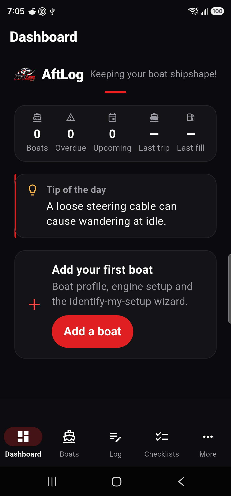
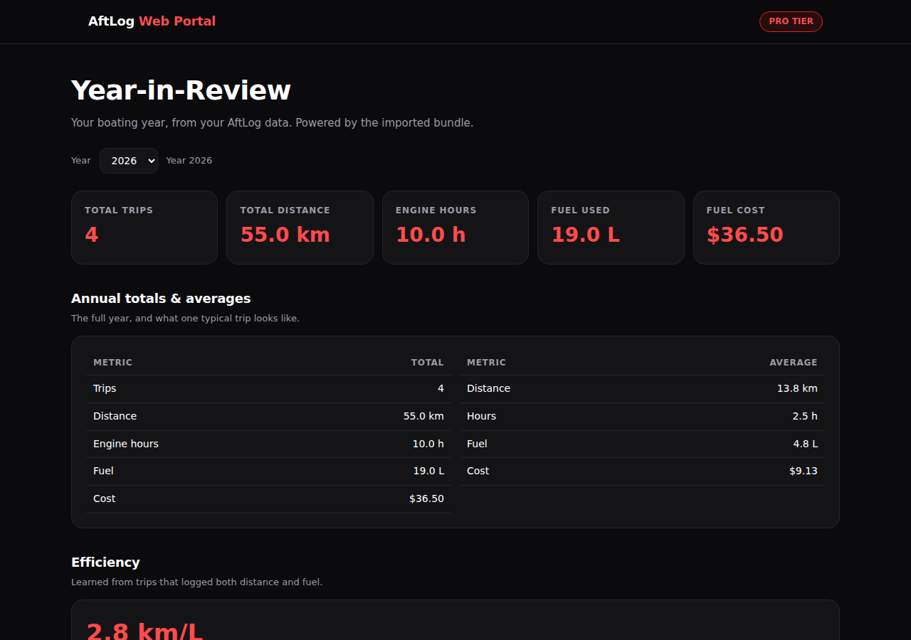
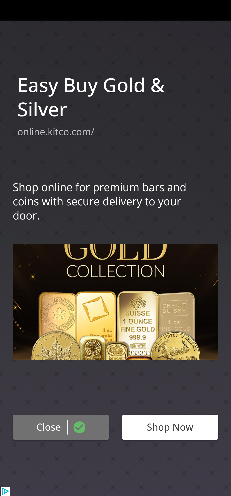
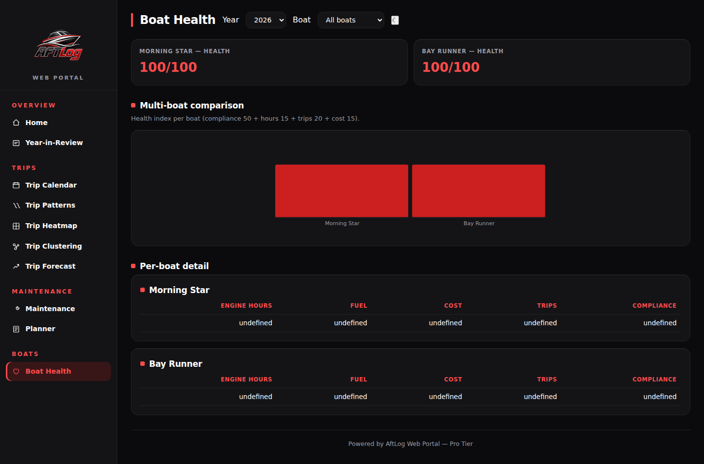

New boat owners
You just bought a boat. AftLog walks you through setup, safety gear, and your first season — you're not supposed to know all this yet.
AftLog tracks maintenance, fuel, trips, and costs for your boat — then turns it into clear, simple insights.
New to boating? AftLog teaches you your boat, checks you're ready before you launch, and tells you what to do when something's wrong.
Built for pleasure craft and fishing boats in Canada + USA. Offline-first, no subscription, no ads.

You just bought a boat. AftLog walks you through setup, safety gear, and your first season — you're not supposed to know all this yet.
You trailer, launch, and fish on weekends. AftLog keeps your checklists, fuel, and service history in one place.
You care about costs, range, and reliability. AftLog's analytics sheets and Web Portal give you the full picture.
AftLog turns your logs into real numbers — range, costs, and usage patterns — so you can plan with confidence.
Log on your phone, review on your laptop. The Web Portal gives you a bigger canvas for planning trips, tracking costs, and exporting data.

Boat Health Score, next task, and fuel range.

Launch, spring prep, winterization, and more.
Trips, distance, hours, fuel, cost, and trends.

Per-boat health, hours, fuel, and compliance.
Launch price is $29. Waitlist members lock it in — it may rise after.
We're building AftLog now. Join the waitlist and we'll email you the day it's ready — plus early access to the seasonal checklists while you wait. New boaters welcome — AftLog is built to teach, not just track.
You're on the list! One email at launch — nothing else. We'll see you at the dock.
Something went wrong — please try again.
No spam. One email at launch. Unsubscribe anytime.
Yes. The app is offline-first: logging, checklists, and reminders all work without signal. AI diagnostics have an offline fallback when you're out of range. Sync and export happen when you choose.
No. AftLog does not require an account to use the app. The Web Portal uses your exported bundle, not a live account connection.
Yes. You can export to CSV and PDF anytime, including resale and logbook reports. Your log stays yours.
Yes. The Pro tier supports multiple boats and engines — each with its own health score, checklists, and analytics — with shared Web Portal access.
The free plan covers one boat. Pro ($29 one-time) unlocks unlimited boats, the Web Portal, and everything else.
AftLog is built for pleasure craft and fishing boats in Canada and the USA, with seasons and reminders tuned to those regions.